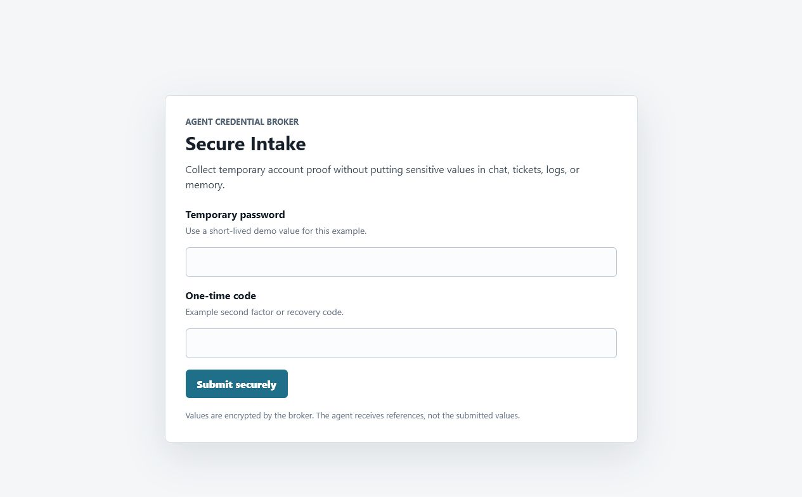
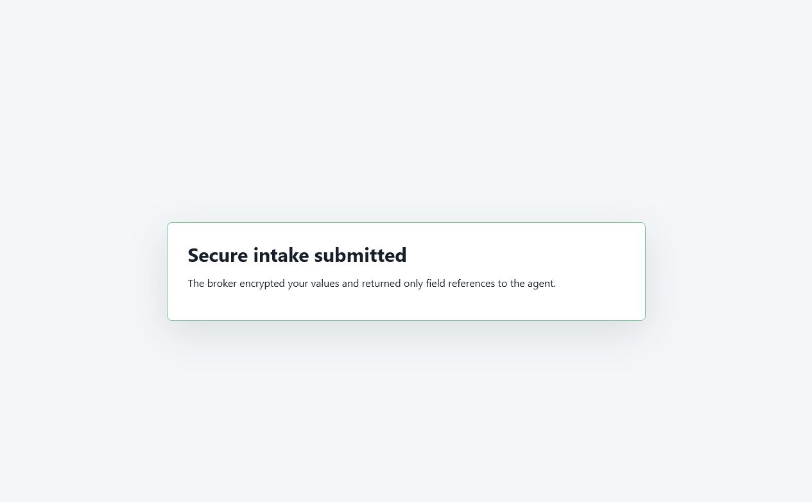

Agent infrastructure
Agent Credential Broker
Small proof of concept for keeping agents away from raw credentials. The broker stores encrypted secrets, grants scoped leases, runs narrow provider adapters, and returns operation results without giving the agent the credential value.
The newer secure intake example covers a second leak path: users pasting protected values into chat, tickets, email, prompts, logs, screenshots, or memory because an agent asked for them.
What the repo covers
- Scoped leases keyed by agent, system, resource type, resource id, action, and TTL.
- Broker-owned provider routes that inject credentials inside the broker process.
- Audit records for grants, lease requests, provider calls, and sensitive intake submissions.
- Secure intake forms where agents receive field references, not submitted values.
Secure intake update
The agent creates a short-lived form with exact field labels. The user
submits values through the broker. The broker validates required fields,
encrypts the values, marks the form as used, and returns only
references such as intake_example:temporary_password to the agent.


Provider-side use
A provider adapter can resolve the encrypted intake values inside the
broker after a scoped lease allows that exact action. The response goes
back with evidence, field names, and secret_values_returned: false.